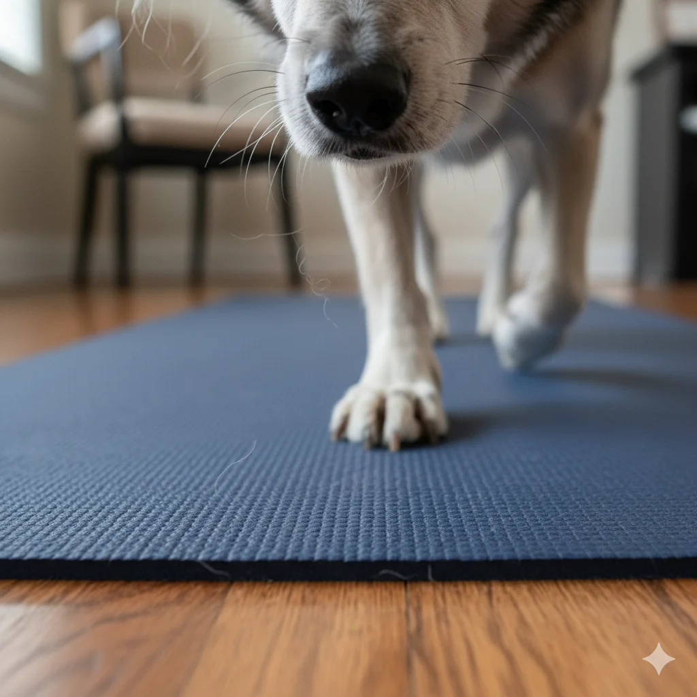

老狗關節退化怎麼辦？5個關鍵居家保養與復健技巧
當我們深愛的狗狗步入老年，最常見也最讓飼主心疼的問題之一，就是「退化性關節炎」。看著曾經活潑好動的牠，現在連走上沙發都顯得吃力，我們能做些什麼？本文將提供實用且經醫學建議的照護方針。
為什麼老狗容易關節痛？
根據 美國獸醫協會 (AVMA) 的統計，許多大型犬在 7 歲後、小型犬在 10 歲後，會開始出現關節磨損。軟骨的流失導致骨頭直接摩擦，產生劇烈疼痛。
徵兆：如何判斷狗狗關節不舒服？
狗狗通常很能忍痛，請仔細觀察以下行為：
- 早晨起床時身體僵硬。
- 不願意上下樓梯或跳上沙發。
- 走路姿勢改變，出現跛腳或單腳跳。
- 被觸摸腰部或腿部時會閃躲或低吼。
💡 溫馨提示： 發現以上症狀請務必先帶至獸醫院進行 X 光檢查，確認病因。
5招居家關節保養術
1. 居家環境防滑工程
家中的磁磚或木地板是老狗關節的隱形殺手。建議在牠常活動的區域鋪設止滑地墊或瑜珈墊，增加摩擦力，減少起身時滑倒造成的二次傷害。
2. 體重控制（減肥）
這是最有效且免費的治療方式。多餘的體重會對膝關節和髖關節造成巨大負擔。請諮詢獸醫計算理想體重，並嚴格執行飲食控制。
3. 適度的低強度運動
絕對不能因為關節痛就完全不動，這會導致肌肉萎縮。建議進行游泳或平地慢走，每次時間縮短（約 10-15 分鐘），但增加次數。避免激烈的接球遊戲。
4. 營養補充品的使用
市面上有許多關節保健品，常見有效成分包含：
- 葡萄糖胺 (Glucosamine)： 修復軟骨。
- 綠唇貽貝 (Green-lipped mussel)： 富含 Omega-3，具天然抗炎效果。
- UC-II (非變性第二型膠原蛋白)： 調節免疫反應，減緩發炎。
註：使用任何保健品前，請務必諮詢您的家庭獸醫師。
5. 熱敷與按摩
在天氣寒冷時，可以使用暖水袋（需包裹毛巾避免燙傷）熱敷狗狗的關節處 10-15 分鐘，促進血液循環，舒緩僵硬。
結語
老犬的關節照護是一場馬拉松。透過耐心的觀察與環境的微調，我們可以有效減輕牠們的疼痛，讓牠們的老年生活依然充滿品質與快樂。